| We adopted Lily from
our neighbor and friend, Dick Cain. He had found her as
a tiny kitten, alone on a remote farm. He couldn't keep
her, so he had her in his garage in a cage while he figured
out a new home for her. I was over there messing with
Lily in his garage day after day, often without Dick's
knowledge. One day Eric came home from work and saw me
in that garage. He went up to Dick's door, rang the
doorbell and said, "My wife wants your cat."
Without a second's hesitation, Dick said, "Here's her
food, here's her litter, see you later!" And just
like that, we had a third cat. |
|
|
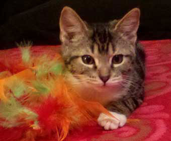 This was the only non-blurry photo I was able to get of
her as |
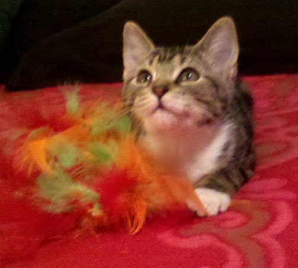 |
| She has always been a pretty little thing. But she had a bossy streak. | |
|
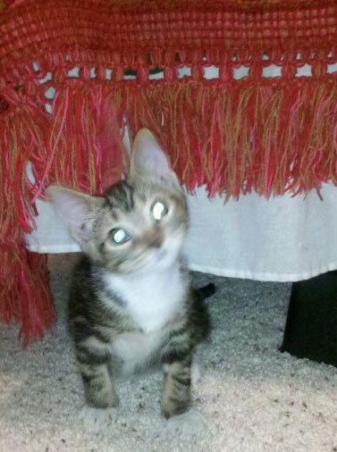 She used to jump out from under the bed and do a
"play attack" |
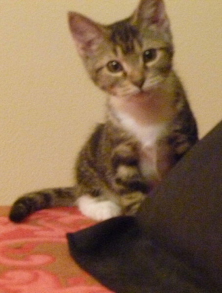 |
| She was very lovey when we first got her, but
that ended real quick. She would sit on my lap or sleep on my legs, but she never let me hold her after that first week. |
|
|
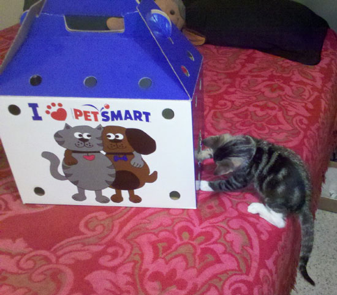 This photo was taken seconds before I had to lunge
forward to keep her from pulling the box off |
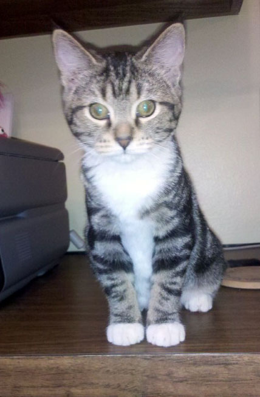 |
| Now she's finally out of quarantine, we kept her
isolated in the guest room until we had her checked out as being safe for the other cats. |
|
|
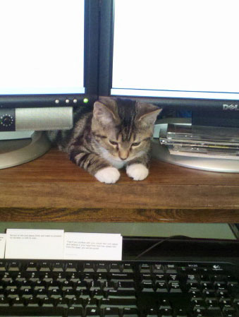 She immediately went to work as my work-from-home
supervisor. |
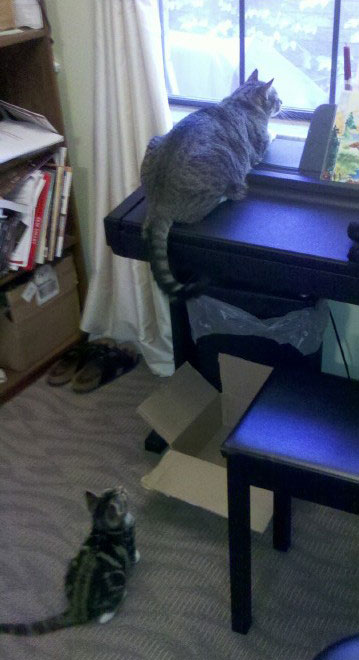 |
| Here she is about to bring on some
trouble. Rocket thinks he's stalking a bird, but his tail is about to get a surprise attack! |
|
|
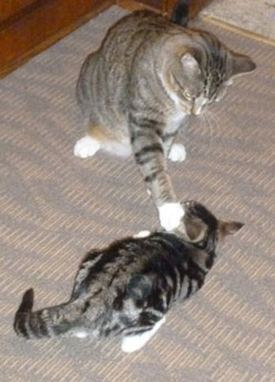 |
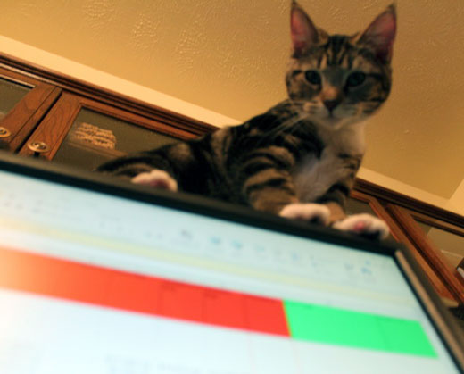 Here she helpfully balances on the narrow top of my expensive flat-screen monitor. |
| Rocket was such a bully to poor Feisty at
first, but with Lily, this was as rough as he ever got. He'd put a paw on her and just hold her still. He should have gotten his bluff in early, she ended up
bossing |
|
|
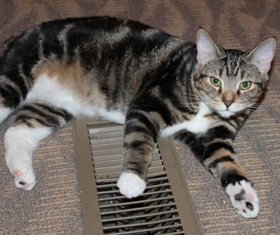 One of her lifelong favorite nap locations was on top of floor grates if the heat was on. |
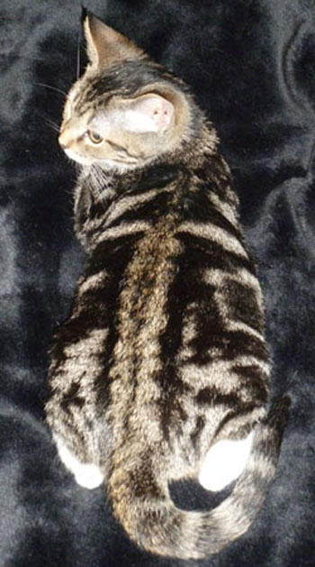 |
| She had beautiful coloring. | |
|
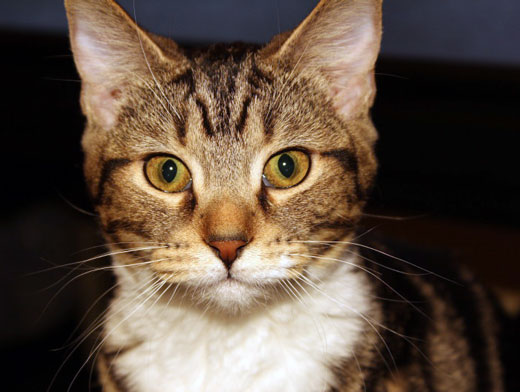 This was a pretty standard look from her. She had to think pretty hard about things. |
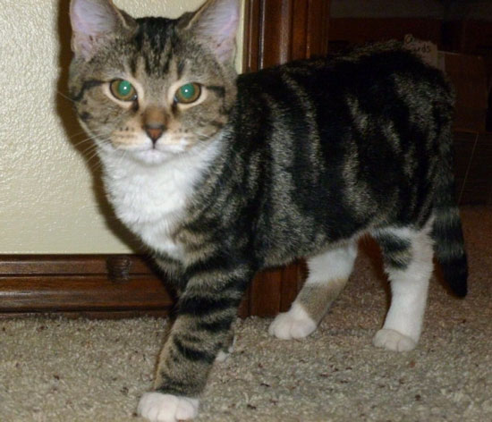 |
| She also had the worst reflexes I've ever seen on a cat. Her reaction time was as slow as mine! | |
|
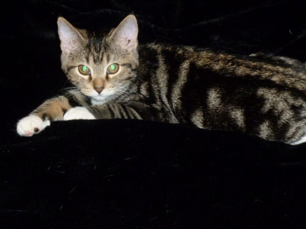 |
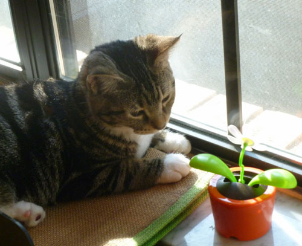 |
| Looking sultry in this one! | "I love you, fake plant." |
|
Sweet face - helping me decorate the Christmas tree. |
|
| Trying to teach her to stay out of the tree was a multi-year process. | |
|
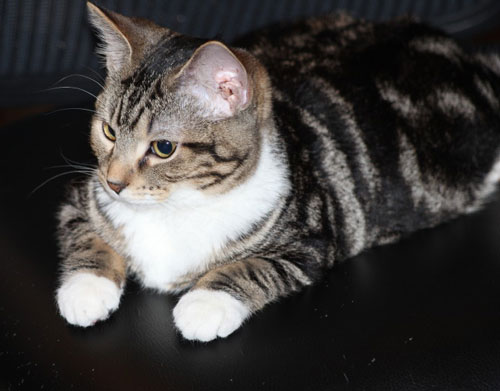 |
|
| One of her favorite things was to ruin the joy
of the other cats. Here it looks like she has spotted one of the other cats in a happy place. She's about to go spoil it for them! |
Speaking of spoiling, this started as a somewhat
organized arrangement of computer accessories. She discovered there was heat being put out back there so she made a nest of chaos out of it. |
|
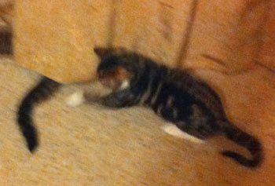 A very blurry shot of her about to give a bird-hunting
Rocket |
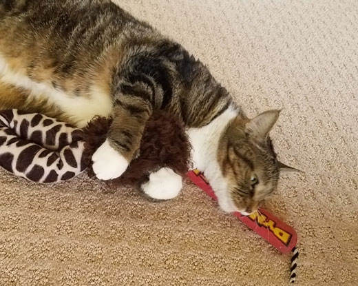 |
| Here she is playing with her own (brown) toy, made more fun by laying on Rocket's favorite (red) toy. | |
|
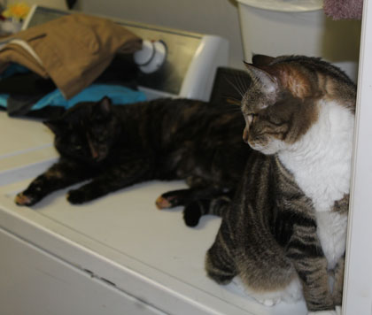 |
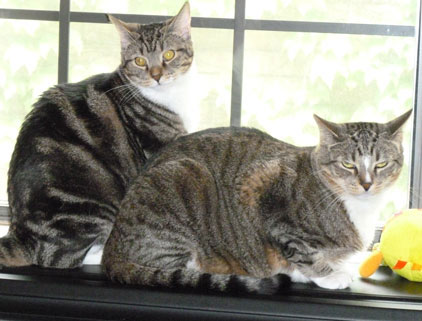 |
| Here is Feisty in her very favorite spot - the
warm clothes dryer, but Lily was definitely not invited to this party. |
We used to walk into a room and say,
"Wonder who was on the piano first?" As if it was any kind of mystery! |
|
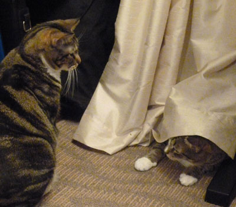 |
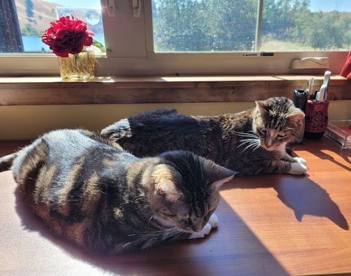 |
| Another round of Rocket's bird watching rudely interrupted. | And now she's his unwelcome companion on the sunny patch on the desk. |
|
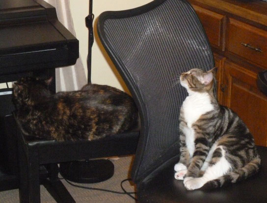 |
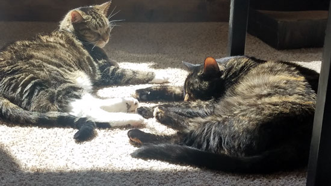 |
| Here she's getting as close to Feisty as she can but using the mesh chair for protection from swats. | Occasionally the older cats would allow her to
come somewhat close, but it was never the full snuggle-up that Lily seemed to want. |
|
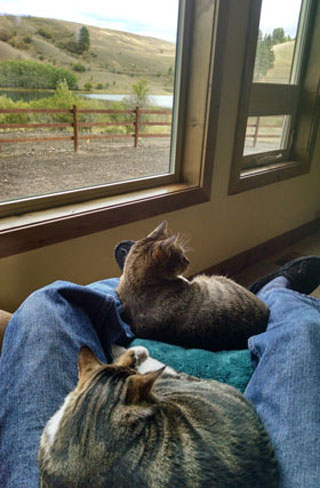 |
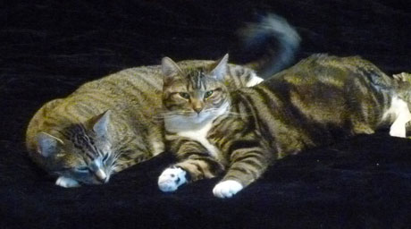 I love Rocket's tail, it was swishing and thumping with
annoyance as she moved |
| I'm pretty sure I know who was on Eric's lap first for this nap. | |
|
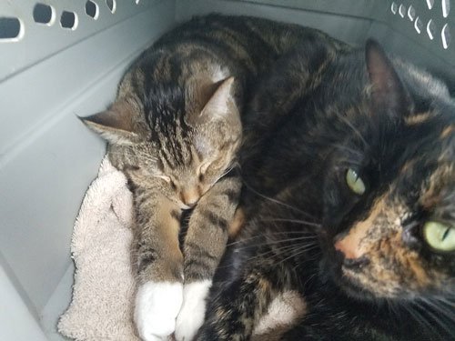 |
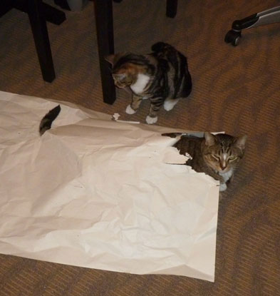 |
| The only time Lily and Feisty ever truly got
close to one another was on the 3 day car trips between Oklahoma and Montana. We were all so miserable that Feisty just didn't have the energy to run away from her. |
Rocket thinks he's relaxing in this packing
paper, but just wait! |
|
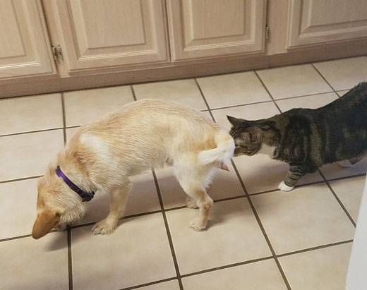 When we adopted Buddy, she was terrified of him.
She lived on top of the kitchen cabinets for |
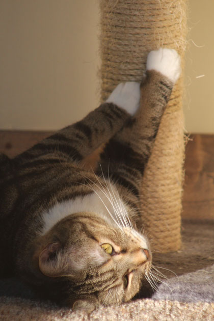 |
| Lily loved the scratching post, but it was too tiring to stand up while using it. | |
|
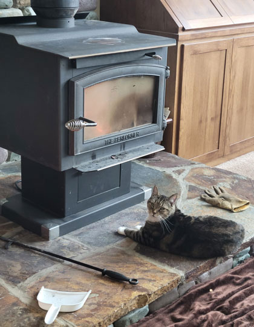 |
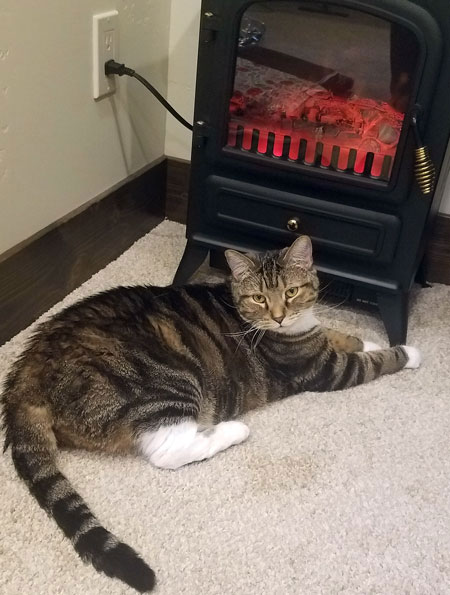 |
| She had a ridiculous tolerance for high heat
situations. She'd get crazy close to the fireplace. |
And if she couldn't have a real fire, a fake
fire would do just as well. She has her head right in front of the heat register. |
|
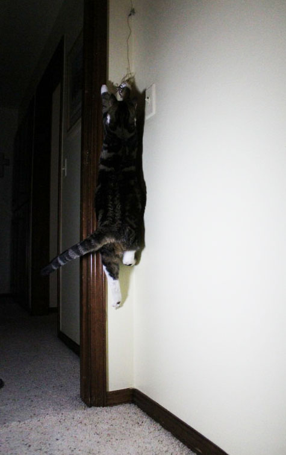 |
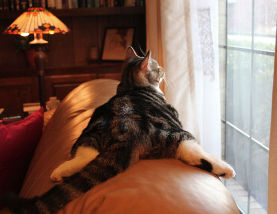 Another quirk of this very quirky cat was this particular
pose she enjoyed. |
| When she was young, Eric could get her to jump
crazy high by teasing her with a string on a stick in a corner. She only liked to play in corners or through the crack of a door. |
|
|
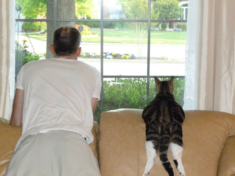 One day Eric decided to join her and thankfully I had my
camera handy. |
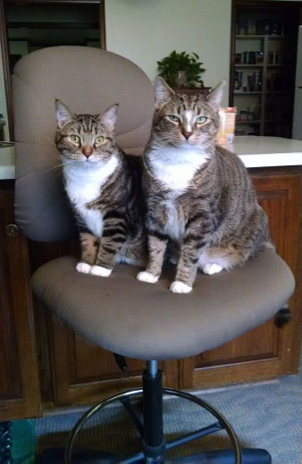 |
| Eric was gifted with this tall chair, which I
thought I would use in my home office. Wrong! After a brief struggle with Rocket, it became Lily's permanent throne. |
|
|
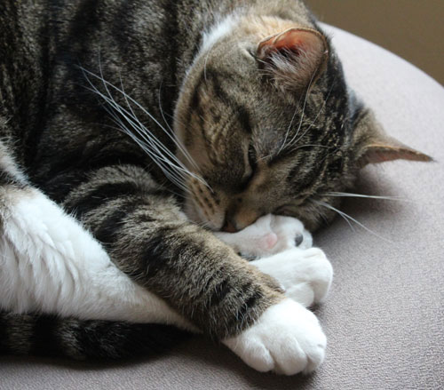 |
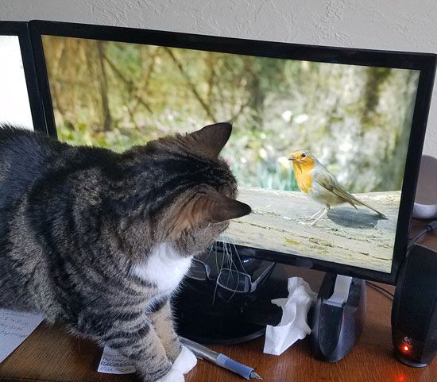 |
| In the past few years, I think she spent about 18 hours a day in that chair. | It was mostly Feisty's thing, but Lily could
enjoy some CatTV when the mood hit her. Or if Feisty had been enjoying it and Lily wanted to take away her joy. Either way, it worked for Lily. |
|
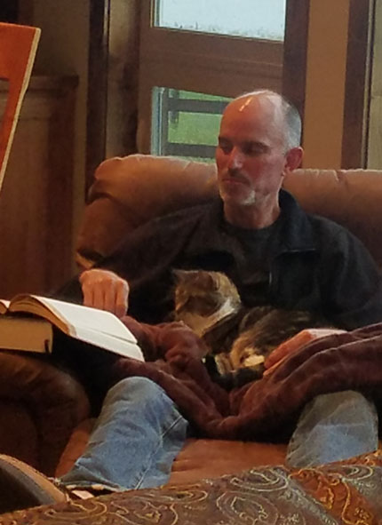 |
|
| I think it was safe to say that she was a Daddy's girl. She liked my Dad too! | Here she helps Eric read a book. She was super helpful like that. |
|
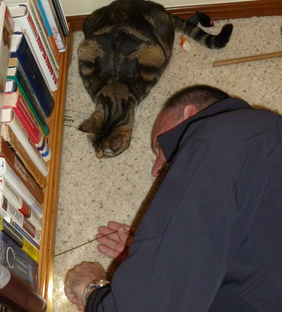 |
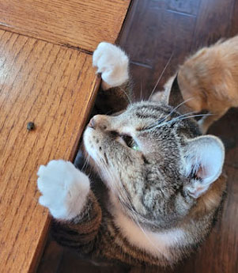 Another favorite game she made up was to get us to put |
| Speaking of being helpful, she would knock all
the rattle mice under the bookcase, then block Eric's view as he tried to fish them out. Weekly. |
|
|
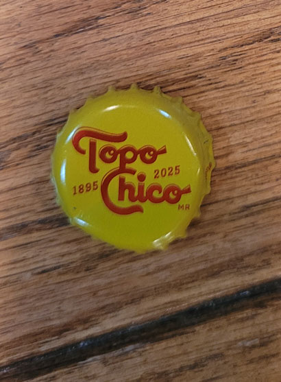 |
We can't talk about her crazy games without
mentioning Topo Chico lids. She loved this game where she sat in a chair at the kitchen island, we would slide Topo Chico lids across the granite toward her, and she would swat the daylights out of them - flinging them across the room. We would then do our stupid human tricks to go fetch |
|
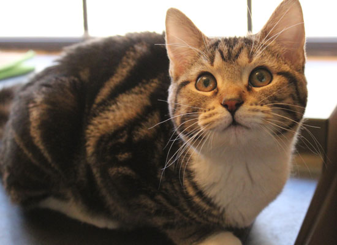 |
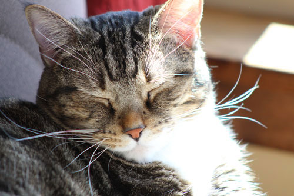 |
|
One thing you can say about Lily for sure is that she was
beautiful.
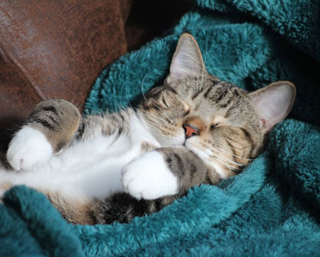
We miss her! |
|